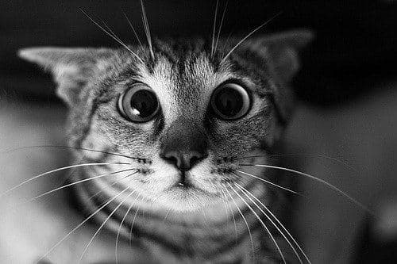

Место действия - деревня в Ленинградской области.
Время действия - зима. Под Рождество.
Волосовский район тут вообще не причем.
Однажды, мне потребовалось приехать на дачу, чтобы выполнить некую срочную работу. Появившись, я взялся за дело незамедлительно. В те времена рабочий день мой строился так: подъем в семь и без отвлечения на завтраки и обеды работа до семи вечера. Потом ужин и довольно рано ложился спать, чтобы встать пораньше.
Этот день не был исключением. Сходу включился в работу и отвлекся лишь раз, чтобы проводить уезжающих в этот день членов семьи. На прощание мне было сказано, что имеется самодельный ликер и если мне взгрустнется, могу угоститься. Закончив работу я об этом вспомнил и отхлебнул полстаканчика. Показалось вкусно, но малой крепости. Я еще отхлебнул полстаканчика, и еще. И тут обнаружилось, что этот "ликерчик" произвел неожиданный эффект - я совершенно опьянел. Настолько, что решил, надо срочно валиться в постель, пока дойти до нее в состоянии. Так и поступил. Закрылся в небольшой комнатке и упал. В мою комнату успели увязаться две кошки и это последнее, что могу вспомнить из того вечера.
Когда открыл глаза следующим утром, первое, что мне встретилось, две пары глаз моих кошек, которые лежали в ногах, но не спали свернувшись, как положено, а смотрели на меня ошеломленными взглядами, глазами как плошки. Не придав этому обстоятельству значения, я встал, чтобы заниматься запланированными делами. И тут заметил, что вся наволочка и пододеяльник в районе моей головы забрызганы кровью. Cтрого взглянул на кошек и они, как-то, сжались. Стал выходить из комнаты, кошки метнулись в открытую дверь, опережая меня. Потом пошел умываться и, взглянув в зеркало, опешил - у меня все лицо было в крови! Ни каких ран или травм не было ни на лице, ни где бы то еще. Я вернулся к постели, чтобы хоть что-то понять и обнаружил в районе подушки предлинный и отвратительно толстый крысиный хвост. Обыскав все кругом, тело крысы не нашел.
По сей день не нахожу объяснения происшедшему ночью. Куда делась крыса? Ее сожрали? Кто? Кошки у меня на голове? Или я сам, отобрав у кошек? Ни одно из объяснений не могу принять, как допустимое. Я не понял.
